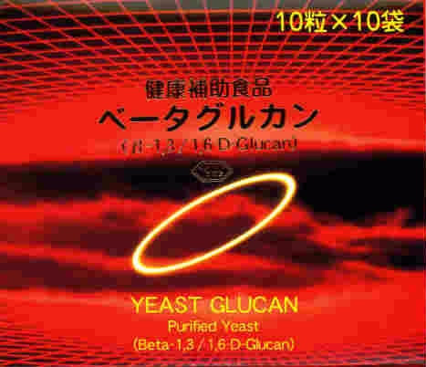

１００カプセルベータグルカンは、パン酵母の細胞壁から取り出された成分で、
免疫（体内異物を排除する能力）に対する効果が期待されています。
グルカンというのは、グルコース（ブドウ糖）が鎖状に多数連結した物質です、
例えば、ご飯のでんぷんもグルカンです。
グルコースを形作る炭素には番号がつけてあります、
結合が１、３と言うのはグルコースの1番と隣のグルコースの３番が結合していることです。
ただし、この場合は炭素が直接結びついているのではなくて、両方の炭素についている
水酸基（-ＯＨ）同士が、水が外れた形で結びついたものです（脱水結合）。
炭素に結合する水酸基は、炭素同士が形成する面に対し、上方向とか下方向に向いています。
その方向をアルファー、ベーターと呼びます。
ベーター１、３グルカンと言うのは、グルコースの１番炭素のベーター方向の水酸基と、
隣のグルコースの３番炭素の水酸基が脱水結合し、それが鎖状に繋がったものです。
人は、この結合を切る消化酵素を持っていません。
そのままの構造で消化管を移動します。
バイオロジック社のベータグルカンは、ブドウ糖が１−３に結合した長い鎖の
１４〜１５個毎に、ブドウ糖の短い鎖が１−６結合した形をしています。
この側鎖が作用のポイントで、これをベータ１、３／１、６グルカンと呼びます。
１、３グルカンと１、６グルカンが別々で、これが混合した１、３／１、６グルカンは効果がありません。
ベータグルカンを摂ると、胃酸に影響を受けず、小腸に入ります。
小腸の粘膜には、所々にＭ細胞と呼ばれる特殊な細胞があり、
ベータグルカンは、このＭ細胞に取り込まれます。
Ｍ細胞の近くに白血球のマクロファージが常在していて、
ベータグルカンはマクロファージの細胞膜に結合しこれを活性化します。
活性化したマクロファージは、免疫を高める信号を全身に放出します。
ベータグルカンはアメリカで製品化され、酵母専門メーカーのバイオロジック社が、
最初にベータグルカン製品を提供しました。
現在は各社が発売しており、製品の品質は様々で、摂る量をみても、１回にのむ量が、
２.５ｍｇから５００ｍｇまでの違いがあるように、製造技術の難しさが想像できます。
ベータグルカンの品質
効果の高さ、品質の良さの評価は、次の３点が挙げられます。
１）純度が高い・・・不純物が多いと効果が期待できません。
２）１-３/１-６構造がしっかりしている・・・効き目の鍵。
３）粒子が細かい・・・取り込まれやすい。
バイオロジック社のベータ１、３／１、６グルカンの純度は９９％の高品質で、
１％のタンパク質を含みます。
粒子は３〜１０ミクロンです。
摂る量は：健康維持には２.５〜５ｍｇ（１〜２カプセル）、症状改善には１０〜２０ｍｇ（４〜８カプセル）。
２０ｍｇ（８カプセル）より多く摂っても、効果は高まりません、多すぎるとかえって効果が無くなります。
胃に食物があると吸着して効果が落ちるので、空腹時に、例えば朝食３０分前、就寝時に摂ります。
また、同時に「メガフードアルファ」を、食後にお摂り頂きますと、免疫活性化によるビタミンミネラル消耗を補給できます。
商品のご注文はこちらからどうぞ。